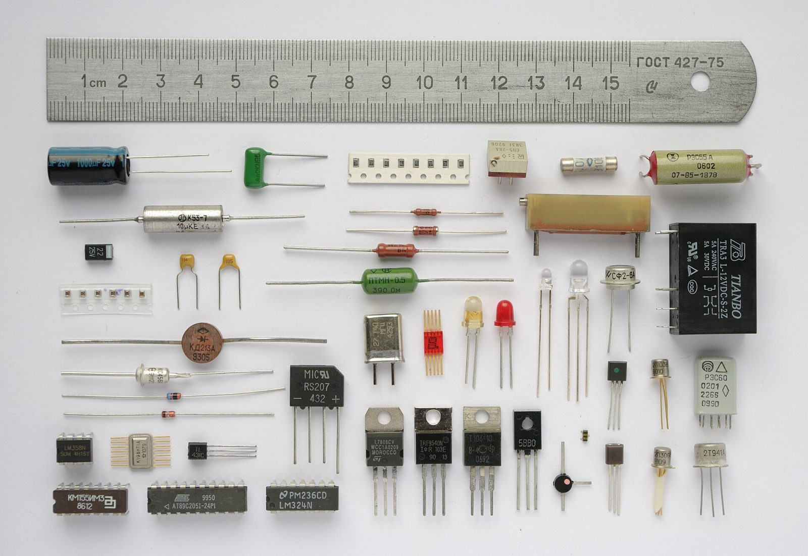

博客
关于嵌入式、太空、设计与技术的一点思考。慢慢写，不着急。
右下角有一台小唱机。点一下碟片，边读边听。

—篇文章
—总字数
—天 · 站点运行
…次访问
…位访客
第一篇文章还在路上
站点刚开张，还没有发布内容。之后会在这里记录嵌入式与硬件项目里的实践。
关于嵌入式、太空、设计与技术的一点思考。慢慢写，不着急。
右下角有一台小唱机。点一下碟片，边读边听。

第一篇文章还在路上
站点刚开张，还没有发布内容。之后会在这里记录嵌入式与硬件项目里的实践。